VISIÓN
Ser la Universidad líder en la formación de profesionales en Ingeniería y de especialización, caracterizada por el estudio, aplicación e innovación tecnológica, con responsabilidad social y reconocida a nivel nacional e internacional.
MISIÓN
Formar y especializar profesionales de excelencia, con principios, valores ético - morales y cívicos, caracterizados por su responsabilidad social, espíritu emprendedor, liderazgo y disciplina; promoviendo la internacionalización, Interacción Social y desarrollo de la Ciencia, Tecnología e Innovación, para contribuir al desarrollo del Estado.
POLÍTICA DE CALIDAD
Formar y especializar profesionales íntegros, con institucionalidad, responsabilidad social y cultura de innovación basada en la investigación y aplicación tecnológica, mediante el cumplimiento de los requisitos y estándares del Sistema de Gestión de Calidad.
PRINCIPIOS
a. Busca la excelencia como desafío institucional en todos los actos académicos de formación, de investigación, de interacción social, de extensión y de gestión.
b. Dirige su esfuerzo principal a la formación y especialización tecnológica.
c. Forma y especializa profesionales en función a la visión del Estado.
d. Inculca valores ético - morales y principios.
e. Promueve y genera conocimientos de vanguardia tecnológica.
f. Respeta la libertad de pensamiento y culto.
g. Promueve el uso sostenible y sustentable de los recursos naturales y el Medio Ambiente.
h. Responde rápidamente y en forma planificada al cambiante entorno social, económico, tecnológico y científico.
i. Mantiene y profundiza las bases históricas y cívicas de nuestra identidad nacional para incrementar el orgullo de ser bolivianos y así proyectarnos hacia el futuro.
j. Respeta, preserva e integra los conocimientos tradicionales y saberes ancestrales a sus diseños curriculares.
k. Promueve la equidad de género, manteniendo la igualdad de oportunidades.
VALORES
a. Libertad, respetando las diferentes corrientes de pensamiento y expresión.
b. Equidad, otorgando oportunidades sin discriminación de género, ideología, raza y religión.
c. Honestidad, exaltando la verdad y la ética profesional.
d. Patriotismo, inculcando el civismo, identidad, cultura y amor a la Patria.
e. Disciplina, promoviendo el acatamiento consciente de normas y reglamentos institucionales; y el respeto a las leyes.
f. Liderazgo, formando líderes que promuevan el emprendimiento de forma individual y colectiva a nivel nacional e internacional.
g. Calidad y Excelencia, inspirando al Talento Humano para la generación de procesos de servicio y de producción, hasta alcanzar la excelencia.
h. Justicia, actuando en función a las leyes y normas vigentes.
i. Ética, respetando valores y principios de la entidad y el Estado.
j. Compromiso, promoviendo y logrando un sentimiento de entrega, identidad y unidad.
k. Igualdad, promoviendo la participación de la comunidad universitaria, sin discriminación ni restricciones, fomentando la cultura de la no violencia.
l. Complementariedad, generando sinergia entre la formación académica y los saberes ancestrales.
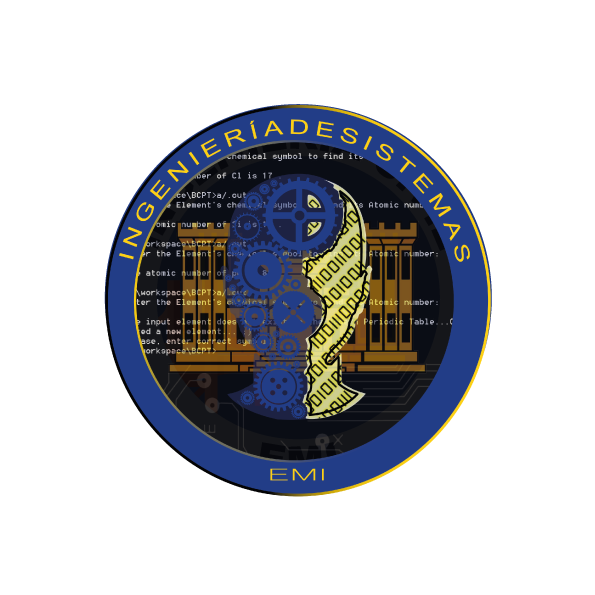
OBJETIVO DE LA CARRERA
El objetivo de la Carrera de Ingeniería de Sistemas es Aplicar los conocimientos específicos de otras disciplinas vinculadas en la detección de las necesidades de automatización que se plantean en el campo de las ingenierías en sistemas. Proponer soluciones en torno a problemas de la automatización de la gestión de la información. Administra proyectos de sistemas de información, redes de comunicaciones de datos, industria del software y seguridad informática. Aplicar nuevas teorías en economía de escala y globalización aprovechando la tecnología de punta en la era de integración electrónica
OBJETO DE LA CARRERA
El objeto de la Carrera de Ingeniería de Sistemas es la teoría general de sistemas en base a la investigación, modelación, implementación, evaluación e implantación de sistemas
COMPETENCIA DEL PROFESIONAL
El Ingeniero de Sistemas graduado de la EMI, es competente para realizar investigación, modelación, implementación, evaluación de sistemas usando nuevas tecnologías de información y comunicación. Formulando soluciones tecnológicas, realizando la planificación, análisis, diseño, desarrollo, mantenimiento, soporte y conocimiento satisfaciendo los requerimientos del entorno de manera eficiente.
El Ingeniero de Sistemas EMI implementa sistemas de redes de computadoras y comunicaciones, empleando estándares en la resolución la problemática comunicacional. Desarrolla sistemas de gestión, aplicando la Teoría General de Sistemas, los fundamentos, métodos y técnicas de las Ciencias Empresariales y de Ingeniería necesarias en la optimización de procesos en las organizaciones.
CAMPO LABORAL
El encargo social nacional e internacional caracterizado por la globalización requiere del Ingeniero de Sistemas a objeto de diseñar, planificar y desarrollar sistemas complejo-conflictivos en las más diversas disciplinas de la ciencia y la técnica, tales como: Administración, Economía, Ingeniería, Medicina, Sociología, Derecho y otras; con el propósito de optimizar y racionalizar los recursos utilizados en los procesos y organizaciones y apoyar en forma eficiente el proceso de toma de decisiones.
De acuerdo al perfil profesional y la competencia general identificada, se determinan las siguientes áreas de competencia en las que el Ingeniero de Sistemas puede desempeñarse como profesional en:
Sistemas de Gestión Empresarial y Producción
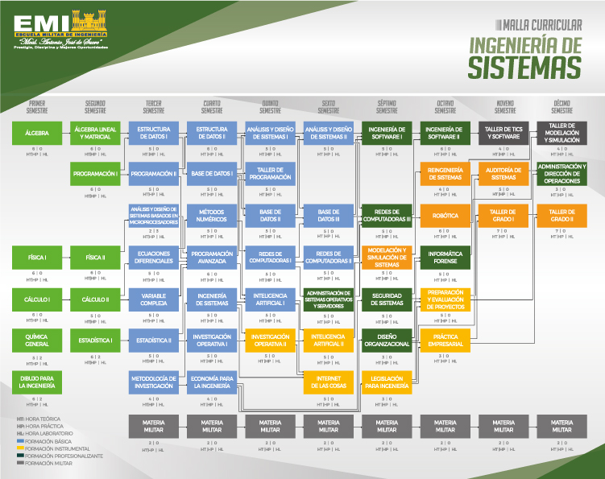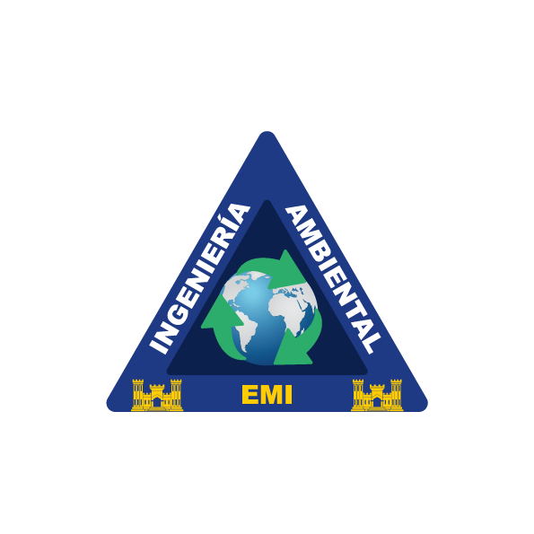
OBJETIVO DE LA CARRERA
El objetivo esencial de la Ingeniería Ambiental es:
“Prevenir, controlar, mitigar y tratar los impactos negativos en los componentes ambientales afectados o que son susceptibles de ser modificados por las actividades humanas mediante el uso de la ciencia y la tecnología, promoviendo la conciencia ambiental y la investigación para contribuir al desarrollo económico y social del país en el marco del desarrollo sostenible”.
OBJETO DE LA CARRERA
El objeto de la Ingeniería Ambiental es el estudio del Medio Ambiente y sus componentes abióticos, bióticos y socio-económicos, así como los efectos de actividades humanas sobre estos componentes y los efectos del medio ambiente contaminado o modificado sobre las poblaciones humanas. Identifica el impacto de las actividades industriales, agropecuarias y municipales en el medio ambiente.
COMPETENCIA DEL PROFESIONAL
El Ingeniero Ambiental graduado de la EMI “Mcal. Antonio José de Sucre” es competente para solucionar problemas medioambientales actuales y futuros.
Elabora planes, programas y proyectos de prevención y mitigación de impactos ambientales negativos y riesgos a la salud humana; ocasionados por actividades antrópicas o contingencias naturales; diseñando medidas de adaptación al cambio climático; aplicando métodos y tecnologías específicas según tipo y magnitud de daño. Empleando metodologías de evaluación de impactos y riesgos ambientales.
Implementa sistemas de monitoreo, control y tratamiento de aire, agua y suelos; empleando diseños y tecnologías convencionales y alternativas; utilizando datos de control y monitoreo de parámetros de calidad ambiental según la normativa nacional e internacional vigente.
CAMPO LABORAL
El Ingeniero Ambiental puede desempeñarse como asesor, consultor, consejero o director técnico en equipos multidisciplinarios o intersectoriales, públicos o privados, como los que se mencionan a continuación:
También puede desempeñar sus funciones en las industrias, instituciones y organizaciones nacionales o extranjeras, involucradas con la temática y la problemática ambiental o cuyas actividades puedan repercutir en forma adversa sobre el medio ambiente general y las poblaciones humanas
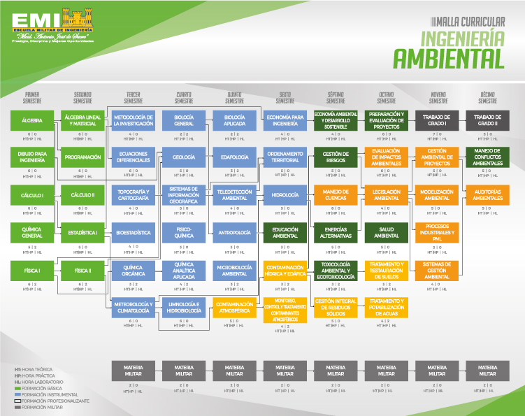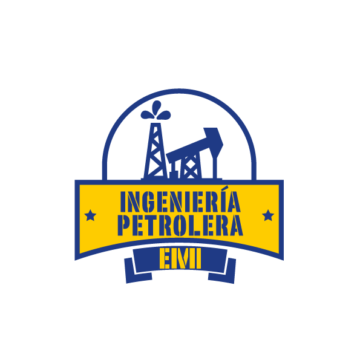
OBJETIVO DE LA CARRERA
El objetivo esencial de Ingeniería Petrolera es formar profesionales con un perfil integral, orientados al aprendizaje permanente, con calidad humana y socialmente responsables, capaces de atender las problemáticas tales como la solución de programas, el diseño, la planificación, gestión e investigación de tecnologías, así como la seguridad industrial y protección ambiental de las áreas productivas dentro de las normas nacionales e internacionales.
OBJETO DE LA CARRERA
El objeto de la profesión de la Ingeniería Petrolera es la administración de la cadena de hidrocarburos integrado por la exploración, perforación, producción, transporte, refinación y/o procesamiento, almacenamiento, comercialización, negociaciones de contratos petroleros y auditorias con la finalidad de producir gas, petróleo y sus derivados.
COMPETENCIA DEL PROFESIONAL
El Ingeniero Petrolero graduado de la EMI “Mcal. Antonio José de Sucre” es competente para administrar la cadena de hidrocarburos, demostrando las siguientes competencias:
> Programa, Dirige y Supervisa los procesos relacionados con la verificación de la presencia y extracción de hidrocarburos, ejecutando el programa de terminación del pozo.
> Determina el comportamiento productivo de un campo hidrocarburífero a lo largo de su vida útil.
> Proyecta programas de producción primaria, secundaria, y mejorada; seleccionando los equipos e instalaciones más adecuadas para una producción racional y eficiente con base en las características y particularidades del campo a producir.
> Diseña los procedimientos de refinación, separación e industrialización de productos secundarios provenientes del gas natural o del petróleo.
CAMPO LABORAL
Puede desempeñarse profesionalmente en áreas como ser:
> Ingeniería en perforación de pozos de petróleo y gas: Programa, Dirige y Supervisa los procesos relacionados con la verificación de la presencia y extracción de hidrocarburos.
> Reservorios: Determina el comportamiento productivo de un campo hidrocarburífero a lo largo de su vida útil.
> Producción de hidrocarburos: Proyecta programas de producción primaria, secundaria, y mejorada, seleccionando los equipos e instalaciones más adecuadas para una producción racional y eficiente.
> Tratamiento, Procesos y comercialización: Diseña los procedimientos de refinación, separación e industrialización de productos secundarios provenientes del gas natural o del petróleo diseñando gasoductos, oleoductos y poliductos para el transporte de hidrocarburos a la planta de almacenaje y comercializarlos.
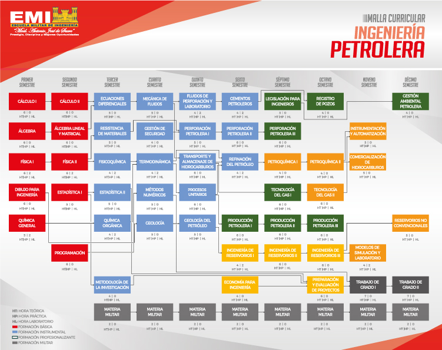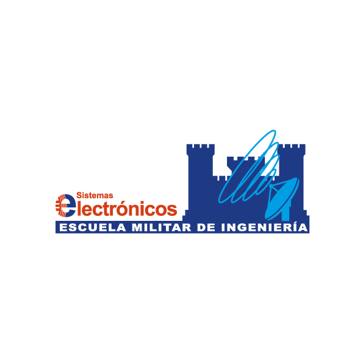
Perfil profesional
El Ingeniero Electrónico graduado de la EMI formula alternativas de solución técnico-científicas a los requerimientos emergentes de la sociedad; planteando proyectos tecnológicos en el área de las comunicaciones electrónicas; planificando sistemas electrónicos de regulación industrial y control automático de procesos, y desarrollando proyectos basados en sistemas y componentes electrónicos computacionales.
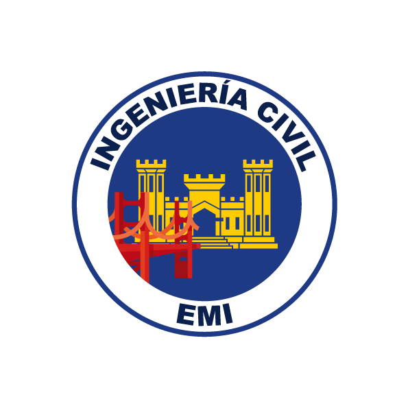
OBJETIVO DE LA CARRERA
El objetivo esencial de la Ingeniería Civil es dar solución a necesidades prioritarias o de confort para el ser humano, mediante la planificación, diseño, construcción, evaluación, mantenimiento, supervisión y fiscalización de obras de Infraestructura del tipo estructurales, hidráulicas y viales, fundamentalmente.
OBJETO DE LA CARRERA
El objeto de la profesión de la Ingeniería Civil es la CONSTRUCCIÓN y en algunos casos la operación de la infraestructura que hace posible el aprovechamiento y control del medio físico, natural y sus recursos, para el confort de los habitantes.
COMPETENCIA DEL PROFESIONAL
El Ingeniero Civil graduado de la Escuela Militar de Ingeniería “Mcal. Antonio José de Sucre” es competente para desarrollar proyectos de infraestructura realizando el diseño, construcción, supervisión de la ejecución y fiscalización de carreteras, aeropuertos, vías férreas, edificaciones, puentes, obras de contención, obras hidráulicas y sanitarias; utilizando normas legales, técnicas y administrativas vigentes; aplicando parámetros de estabilidad, seguridad, funcionalidad, estética, economía y medioambiente.
CAMPO LABORAL
El mercado profesional del Ingeniero Civil es muy amplio si se consideran todas las especialidades de la Ingeniería Civil, pero limitado si se considera el volumen de la demanda de proyectos en cada especialidad siendo el área de carreteras la excepción y el área en el que se encuentra mayor cantidad de proyectos en ejecución.
El Estado representado por el Gobierno Central, Prefecturas y Municipios es el principal empleador, ya sea de manera directa contratando ingenieros civiles para que trabajen en estas instituciones y en sus organismos dependientes o indirectamente contratando empresas consultoras y constructoras que a su vez contratan ingenieros para la construcción de todo tipo de infraestructura.
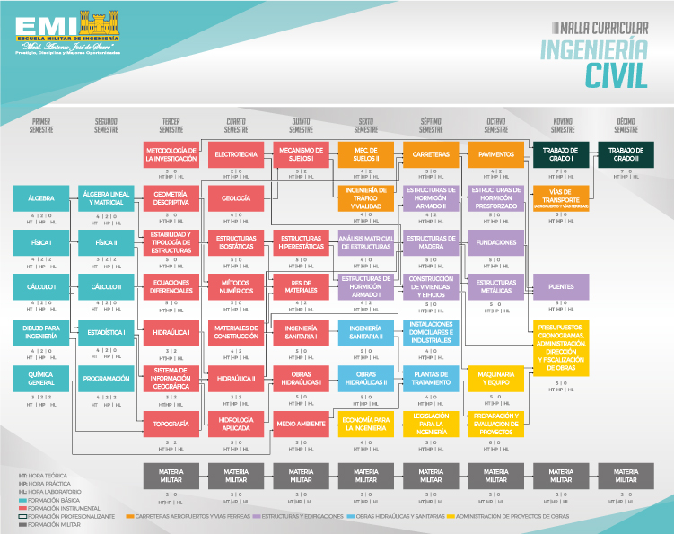OBJETIVO DE LA CARRERA
El Objetivo esencial de la Ingeniería Comercial es solucionar los problemas de la gestión de comercio de bienes y/o servicios de organizaciones públicas y privadas, tanto a nivel nacional como internacional, planteando alternativas de mejoramiento en su posición financiera, formulando estrategias de capitalización de oportunidades comerciales.
OBJETO DE LA CARRERA
El Ingeniero Comercial graduado de la EMI aplica herramientas de Gestión Estratégica Organizacional, Gestión Financiera y Gestión de Marketing con competencias profesionales en organizaciones privadas y públicas, planteando alternativas de mejoramiento en su posición financiera, formulando estrategias y planes de capitalización de oportunidades de mejoramiento de competitividad de la organización en el mercado, empleando criterios macroeconómicos y microeconómicos y toma de decisiones en la organización”.
COMPETENCIA DEL PROFESIONAL
El Ingeniero Comercial formado en la Escuela Militar de Ingeniería “Mcal. Antonio José de Sucre”, es competente para:
Proponer soluciones y generar gestión en organizaciones privadas y públicas mejorando su competitividad, en el mercado, y la sociedad, demostrando las siguientes competencias:
> Formula estrategias y planes de marketing de bienes y/o servicios emergentes de las nuevas demandas del mercado objetivo.
> Plantea alternativas de mejoramiento de la posición financiera de las organizaciones, realizando el análisis de la información financiera proveniente de las mismas y de su entorno.
> Formula estrategias en base al conjunto de análisis, decisiones y acciones de la organización creando y manteniendo ventajas competitivas y sostenibles.
CAMPO LABORAL
El campo de acción del Ingeniero Comercial es amplio y comprende diversos aspectos de las actividades administrativas, económicas, financieras y comerciales. Este profesional está capacitado para realizar funciones de planificación, dirección, coordinación y control de todo tipo de unidades económicas, sean estas productoras y/o comercializadoras de bienes y servicios, privadas o públicas, con y sin fines de lucro y el entorno de la organización en general. Entre ellas destacan empresas multinacionales o nacionales, como ser instituciones financieras, compañías de seguro, empresas dedicadas a la producción, distribución y comercialización de bienes y servicios, asesoría financiera, empresas consultoras, de intermediación financiera, la administración pública en general, etc.
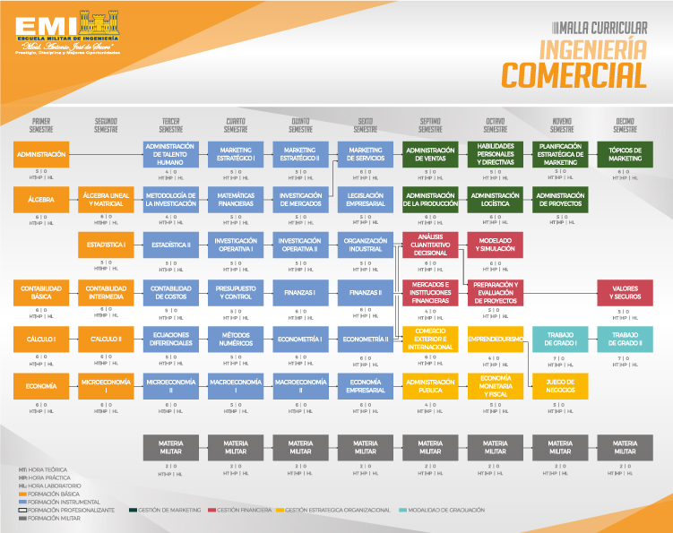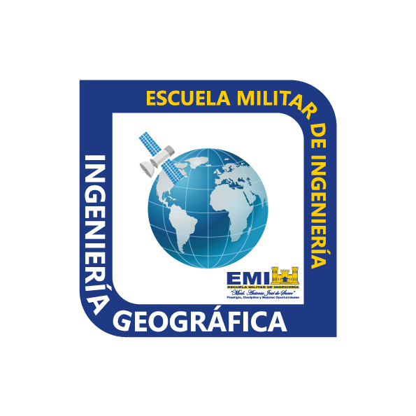
Perfil profesional
El Ingeniero Geógrafo graduado de la EMI gestiona proyectos geográficos realizando la captura, estructuración, modelamiento, procesamiento, análisis, interpretación, difusión y distribución de información geográfica; determina el marco de referencia geodésico en la representación de la forma y dimensiones de la superficie terrestre; identifica y caracteriza la distribución de los recursos naturales, los fenómenos naturales y antropogénicos para el ordenamiento y desarrollo sustentable del territorio.
Misión
Formar profesionales de excelencia en Ingeniería Geográfica, con altos valores éticos, morales y cívicos; caracterizados por su responsabilidad social, liderazgo, pensamiento reflexivo, critico, innovador y creativo, dotados de conocimientos teórico prácticos.
Objetivo
Formar profesionales en Ingeniería Geográfica, fortaleciendo las competencias y dotados de conocimientos teórico prácticos, acorde con el avance científico -teórico, las necesidades socio culturales, tendencias globalizadoras y realidad economía del país.
Competencias por áreas
Perfil Profesional
El Ingeniero Financiero Graduado De La EMI Desarrollará Estrategias Técnico -Financieras Orientadas A La Maximización De Beneficios Económicos En Sistemas Financieros Nacionales E Internacionales, Para Clientes Tanto Individuales Como Corporativos.
Competencias Por Áreas
Selecciona Cuantitativamente Alternativas De Inversiones Rentables De Riesgo Controlado, Discriminando Racionalmente Los Rendimientos De Las Inversiones Y Diversificando Óptimamente El Riesgo En Portafolios De Inversión.
Gestiona Eficientemente Procesos De Intermediación De Mínimo Costo.
Administra Eficazmente Las Necesidades De Capital, Planificando Exactamente Los Flujos De Efectivo Y Estructurando Adecuadamente Políticas Financieras.
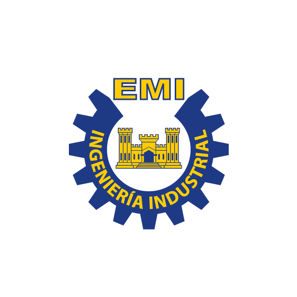
OBJETIVO DE LA CARRERA
El objetivo de la Ingeniería Industrial es el de integrar de forma sistémica y óptima personas, materiales, información, equipos y energía, en la producción de bienes; administrar unidades productivas; absorber, adaptar, mejorar y desarrollando tecnologías industriales; identificar, preparar, evaluar y gestionar emprendimientos industriales.
OBJETO DE LA CARRERA
El objeto esencial de la Ingeniería Industrial es conocer “LAS UNIDADES INDUSTRIALES DE PRODUCCIÓN DE BIENES”, ya que es la profesión encargada de diseñar, desarrollar, mejorar, implantar, administrar, integrar, optimizar y/o evaluar con conocimientos científicos y técnicos los sistemas productivos integrados por recursos humanos de manera que los resultados se puedan predecir, controlar y evaluar para maximizar el valor de la riqueza de la organización.
COMPETENCIA DEL PROFESIONAL
El Ingeniero Industrial graduado de la EMI “Mcal. Antonio José de Sucre”, es un profesional líder multidisciplinario idóneo que:
> Gestiona el talento humano, costos, organización, finanzas e innovación en su campo de acción.
> Investiga, diseña y desarrolla sistemas productivos y/o servicios para la satisfacción de las necesidades del mercado.
> Gestiona la operación y mantenimiento de plantas industriales.
> Identifica y mitiga el impacto ambiental y laboral resultante de la operación industrial.
> Evalúa la factibilidad técnica, económica, financiera, social y ambiental de proyectos.
> Diseña y aplica sistemas integrados de gestión de calidad, medio ambiente, seguridad industrial y salud ocupacional.
CAMPO LABORAL
La Clasificación Internacional Uniforme divide a las ramas de actividad industrial en tres grandes sectores: Primario, (comprende actividades de carácter extractivo); Secundario (incluye actividades de transformación de bienes); y Terciario (conformado por los servicios profesionales, de restauración, hoteleros, financieros, sociales y personales).
El profesional EMI graduado de la carrera de Ingeniería en Industrial, puede trabajar en diversos campos de la industria manufacturera, con habilidades para:
> Generar emprendimientos
> Administrar unidades industriales
> Absorber tecnología pertinente para luego adecuarla o mejorarla.
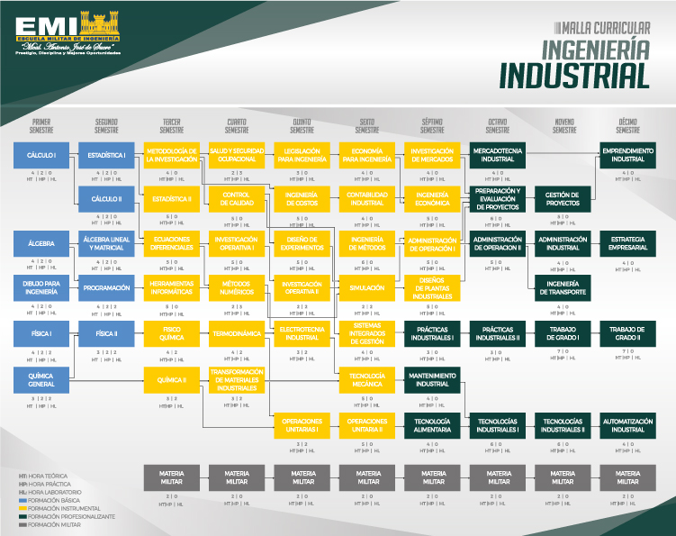